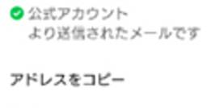
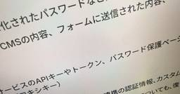

セキュリティ直近7日・スコア順
このトピックだけを購読する: RSS

CVE-2026-99999（PwnEscape）を読み解く──「KVMの脆弱性」ではなく、Linuxネットワークスタックの脆弱性 - Qiita 74
74 qiita.com（はてな IT人気）
qiita.com（はてな IT人気）
はてブ74 · 仕組みを掘る
設計・SRE・基盤 / セキュリティ
工程 担当 課題提示・取捨選択・内容チェック 筆者 原案作成・編成 Claude Fable 5.1 事実検証（検証メモ） GPT-6 Astra 一次資料照合・最終稿 Claude Fable 5.1 本稿は筆者個人の分析であり、所属組織や...
1日前
BASE子会社の漏えい、約2335万人分に 209万人分はクレカ番号「先頭6桁と下4桁」「有効期限」も 181
はてブ181
itmedia.co.jp（はてな IT人気）
セキュリティ
約2335万6000人分の情報が漏えいしたと公表した。うち約209万6900人分には、カード名義、カード番号の一部（先頭6桁と下4桁）、有効期限が含まれていた。
17時間前
タイムズカー、退会後も7年間保管していた免許証画像を全削除へ 約660万アカウント分の漏えい受け 167
はてブ167
itmedia.co.jp（ITmedia NEWS）
セキュリティ
駐車場事業などを手掛けるパーク24は10月16日、グループ会社のタイムズモビリティが運営するカーシェアリングサービス「タイムズカー」で、会員登録時に提出された運転免許証などの本人確認書類の画像を、登録確認後すぐに削除するよう社内ルールを変更すると発表した。同サービスでは9月に不正アクセスが発生し、約660万アカウント分の個人情報が漏えい。うち約160万アカウント分には、本人確認書類の画像も含まれていた。
17時間前

「『楽天カード公式』から詐欺メール」報告相次ぐ ドコモメールに公式マーク付きフィッシング、一部企業の認証設定に脆弱性 171
はてブ171
itmedia.co.jp（ITmedia NEWS）
セキュリティ
「ドコモメールに、楽天カードや楽天銀行の認証マーク付きの詐欺メールが届いた」といった報告がXで相次いでいる。
2日前

データ転送ライブラリ「curl」に特定の条件でリモートからコードを実行される脆弱性／深刻度Highを含む24件の脆弱性を修正したv8.23.0が公開 114窓の杜
はてブ114
セキュリティ
データ転送ライブラリ「curl」の最新安定版v8.23.0が、10月14日に公開された。全24件の脆弱性を修正したセキュリティアップデートとなっている。
2日前

人気Web制作ツール「Studio」全ユーザーの情報漏えいか フォームに送信された内容、外部APIキーなども 77
はてブ77
itmedia.co.jp（ITmedia NEWS）
セキュリティ
対象は、アカウント情報のほか、フォームに送信された内容や外部サービスのAPIキーなど広範囲にわたる。
2日前

Go 1.26.6へのバージョンアップでnet/httpのバグを踏んで稀に502エラーを発生させた原因をちゃんと理解する 2 Sansan Tech Blog
Sansan Tech Blog
セキュリティ
セキュリティ
技術本部Platform Engineering Unit Identity Platformグループの都筑です。 弊社が提供する経理AXサービス「Bill One」や契約AXサービス「Contract One」といったプロダクトが利用する共通認証基盤「Auth One」の開発と運用に携わっています。 Auth OneではDependabotやRenovateを利用して依存関係を自動アップデートするPRを作成し、CIでのテストやレビューが通ったらマージし、E2Eテストや動作確認を実施し本番反映するリリースフローとなっています。 先日、Go 1.26.6へのバージョンアップを実施したところ、社内…
3日前

セキュリティ業務向けAIエージェント基盤「SAGE」の開発記 第1弾：判断は人間に委ねる設計
AI・LLM · 設計・SRE・基盤 · セキュリティ
LINEヤフー Tech Blog (LY Corporation Tech BlogAI・LLM / 設計・SRE・基盤 / セキュリティ
こんにちは。社内のセキュリティ業務にAIを取り入れる業務を担当している、Security Development Division（LINE Plus Security R&D）チームです。この記事は...
3日前

Wizの全体像と主要機能を解説 G-gen Tech Blog
G-gen Tech Blog
AI・LLM · 設計・SRE・基盤 · セキュリティ
AI・LLM / 設計・SRE・基盤 / セキュリティ
G-gen の武井です。当記事では、Google Cloud に加わった Wiz について、製品構成や主要機能から、AI エージェント、導入の流れまでを解説します。 はじめに Wiz とは Google Cloud への参画 Security Command Center との関係 Wiz の全体像 プラットフォームの位置づけ エージェントレス接続 Wiz Security Graph Google Cloud との連携 主要製品 製品構成 Wiz Code Wiz Cloud Wiz Defend 機能と製品のマッピング 概要 Wiz Code の機能 Wiz Cloud の機能 Wiz D…
4日前

そのAIモデル、本当に安全ですか？ オープンウェイトAIのサプライチェーンに潜む新たなリスク「BadEngram」 fltech - 富士通研究所の技術ブログ
fltech - 富士通研究所の技術ブログ
AI・LLM · セキュリティ
AI・LLM / セキュリティ
私たちは、Fujitsu Research of EuropeのAIセキュリティ研究チームです。Pillar Securityとの共同研究を通じて、オープンウェイト言語モデルで採用が進む新しいコンポーネント「ゲート付きパラメトリックメモリ」に潜む、新たな攻撃面を発見しました。
4日前

オーガナイズドセッション「偽情報対策技術」をWebDB夏のワークショップ2026で開催しました fltech - 富士通研究所の技術ブログ
セキュリティ · サイエンス
セキュリティ / サイエンス
こんにちは、セキュリティサイエンス研究所の佐々木です。2026年9月15日（火）から17日（木）まで、大阪公立大学りんくうキャンパスで開催されたWebDB夏のワークショップ2026でオーガナイズドセッション「偽情報対策技術」を開催しましたので、その内容についてご紹介します。
4日前